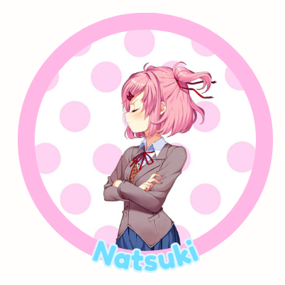

A Study of Doki Doki Literature Club by Team Salvato: the Roles of Sounds and Images in the Game
This game is not suitable for children or anyone who is easily disturbed!
WARNING! This game describes: death, suicide, hanging, knives, stabbing, gore, blood, flashing, cutting, self-harm, vomit and abuse.
DDLC Trailer!
Meet the Characters!
Sayori, who is the first to be introduced, is seen as the MC's childhood best friend and neighbor. She is a kind character who truly wishes the best for MC.
She, like the other characters, is a part of the Doki Doki Literature Club and wishes you to join to become socially ready for college.
The following three are characters the MC meets for the first time during the Club’s meeting. Not much is known about these girls just yet, but so far this is what we know: Yuri, a timid girl who is self-conscious and apologetic, but is passionate about literature and quick to argue with Natsuki about writing. She likes tea, poems, and collecting decorative knives.

Natsuki, a headstrong girl who wishes to be taken seriously. It takes a while for her to get comfortable around new people. Like when MC is introduced into the club, she becomes upset and even complains about how we ruined the atmosphere.
Natsuki enjoys anime and baking and cute things.
Monika, the club’s president. She is kind, sporty, and popular. She founded the club to create a safe space for those wanting to showcase their passion
for literature. Monika likes playing the piano, shopping and bookstores.
A morbid twist on the average dating simulator game
Before we start, take a listen to DDLC's lovely opening to the game!
With an upbeat sound, it suggests a kind of "inviting adventurous" theme!
It truly does start that way! We begin with the protagonist being pushed into joining a club, specifically the Literature Club, which Sayori is a member of.
You decide to give it a try and become a member, where you share poetry and learn more about the others in the club. You soon become closer to a member, perhaps even closer than just friends?
Later in the game, Sayori finally opens up to you about her ongoing depression and even confesses to you. However the MC responds to her confession, she ends up going home.
When MC realizes she didn't come to school the following day, the MC discovers her hanged body. In disgust and horror, the MC panics as they watch their best friend’s lifeless body in front of them.
The game quickly ends and glitches you back to the main menu.
Take a look at this compilation of gaming YouTubers’ and their reaction to this dark scene.